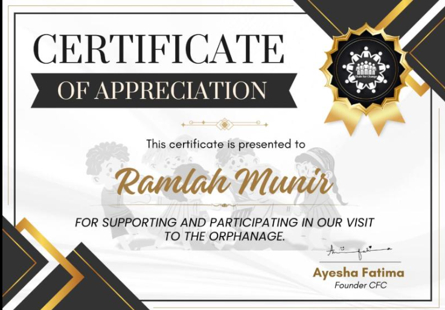
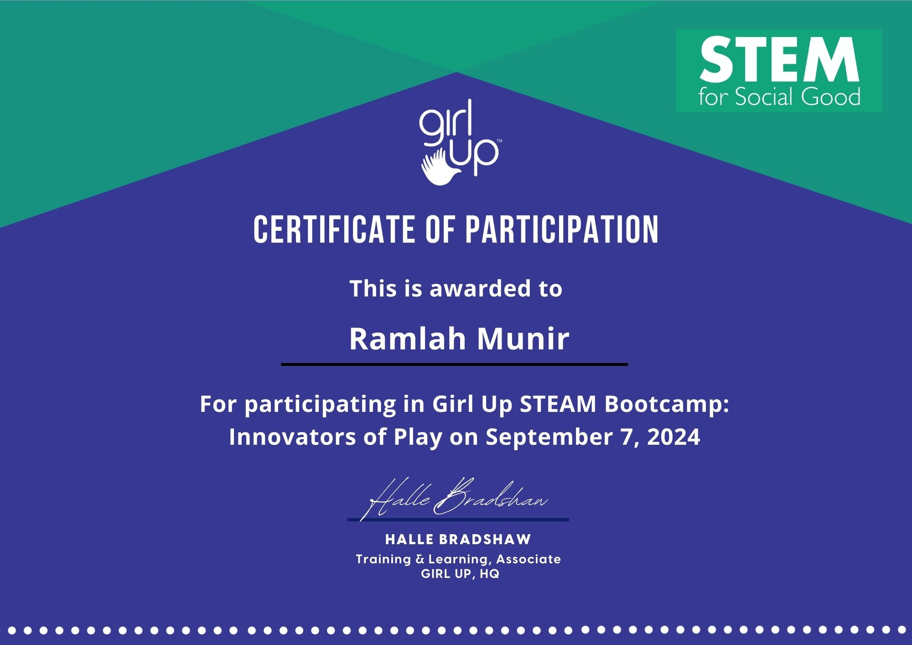
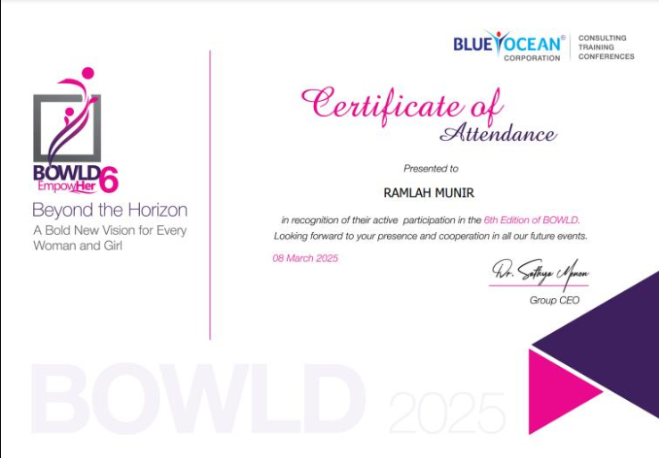

Visited Edhi Center as part of social outreach initiative

Active member promoting women in technology

Women's Day 2025 participant
In partnership with the NGO Chin for Change, I led a group initiative to support the residents of the Edhi Center in I-8. The goal was to move beyond traditional charity and focus on high-impact social interaction.
This visit was more than just a volunteer project; it was a profound personal milestone. Witnessing the resilience of the children at the Edhi Center and the dedication of the staff was incredibly humbling. It remains one of the best and most eye-opening experiences I’ve ever had, teaching me that the most valuable thing we can give is our time and genuine presence
Believing that Ramadan is a time for shared blessings, my group of class fellows and I decided to spend our Iftar with the children at an orphanage. We wanted to provide more than just a meal—we wanted to provide a memory.
We mobilized our network to collect donations, which allowed us to curate specialized goody bags filled with toys and gifts. Our goal was to ensure that the spirit of the month reached those who need it most.
The image of those innocent faces is something I will never be able to forget. Beyond the logistics of collecting donations and packing bags, the real value was in the smiles we shared at sunset. This initiative taught me the importance of empathy-driven leadership and the profound impact of small, intentional acts of kindness